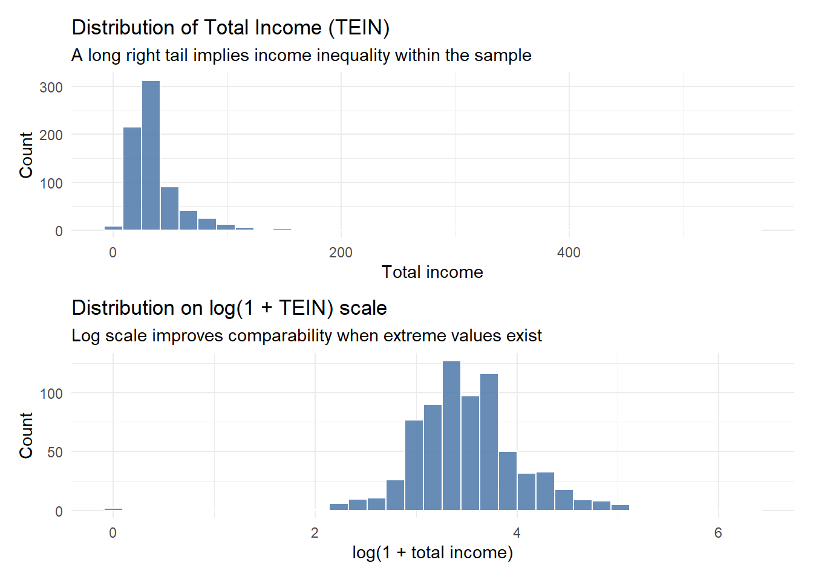
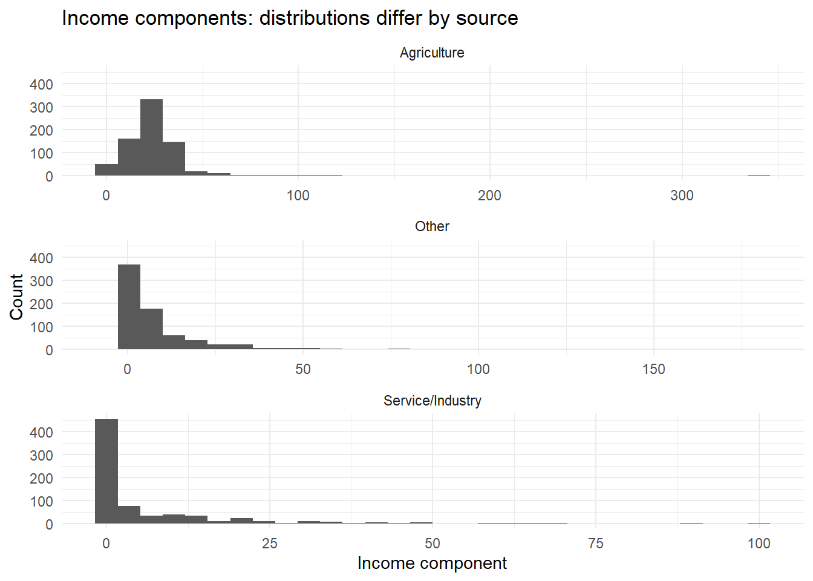
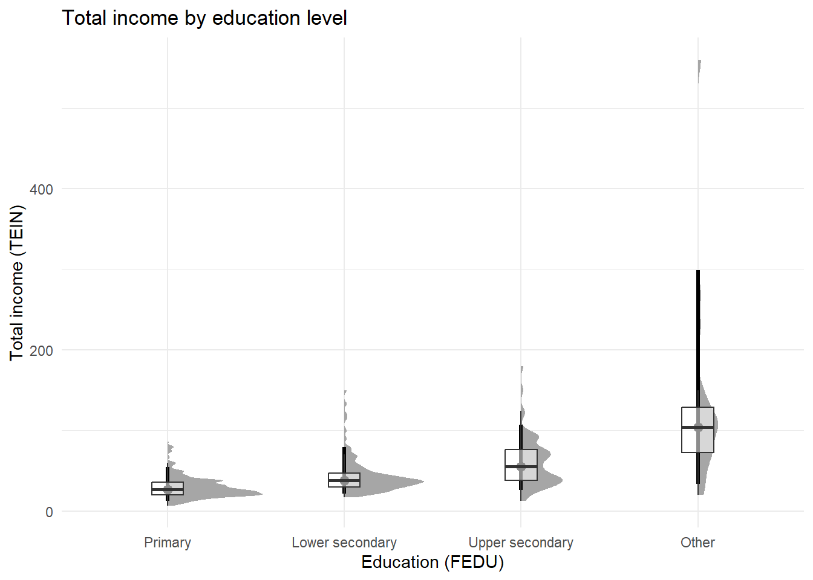
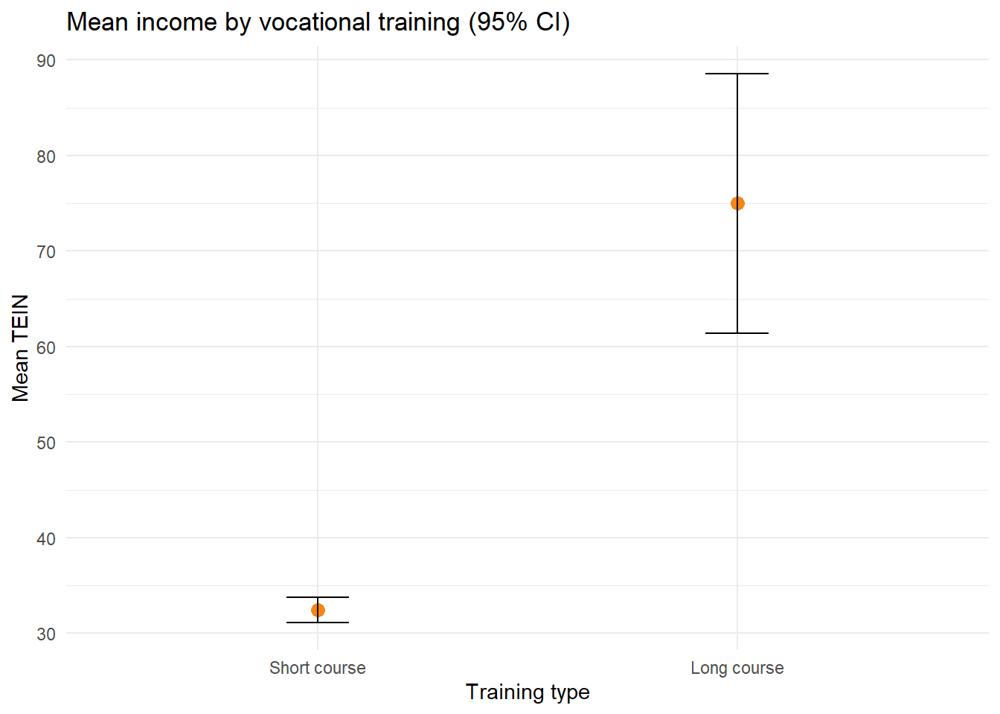
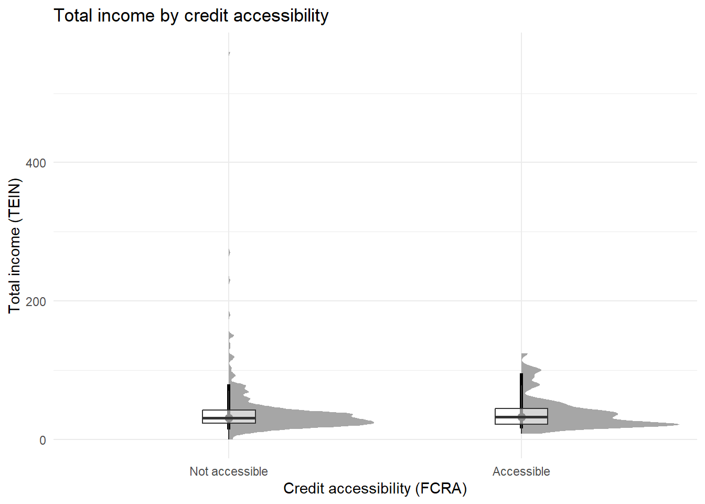
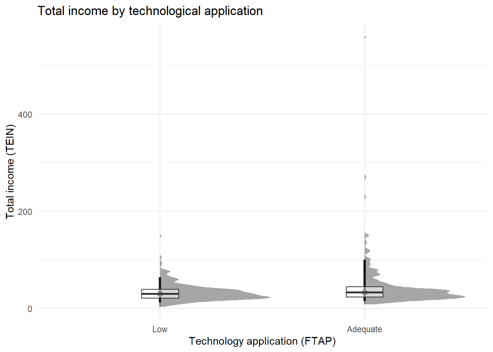
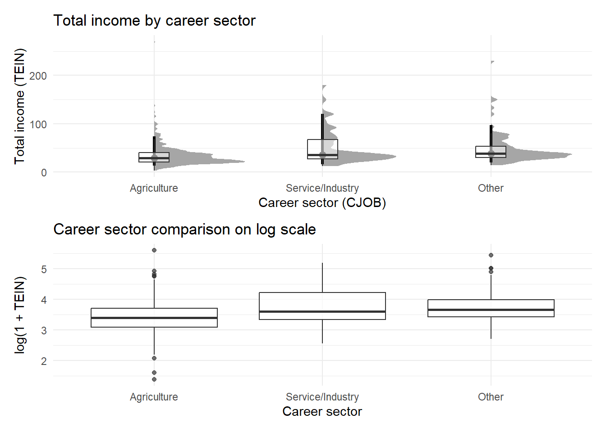
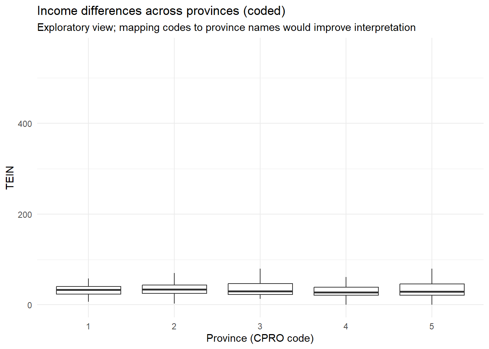
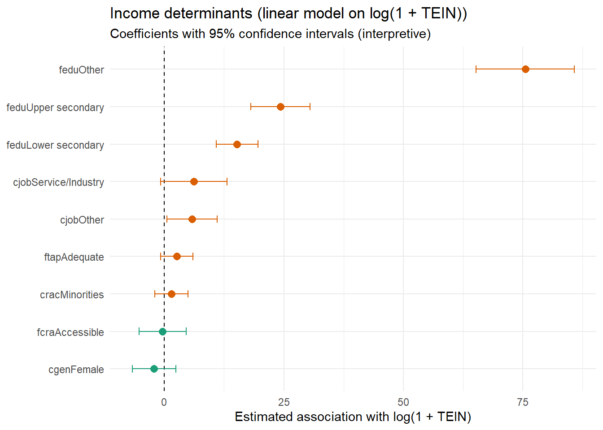

Show/Hide Code
library(tidyverse)
library(readxl)
library(janitor)
library(scales)
library(patchwork)
library(ggdist)
library(ggstatsplot)
library(broom)
library(viridis)
library(RColorBrewer)Income Patterns and Drivers among Informal Rural Labourers in Northern Vietnam
This report analyses a survey dataset of informal rural labourers in the northern mountainous regions of Vietnam. The objectives are:
Interpretation note. Results should be read as associations (not causal effects) because survey design and sampling may limit representativeness.
library(tidyverse)
library(readxl)
library(janitor)
library(scales)
library(patchwork)
library(ggdist)
library(ggstatsplot)
library(broom)
library(viridis)
library(RColorBrewer)# --- Global plotting style (clean + colourful, similar to top-scoring layouts) ---
theme_set(
theme_minimal(base_size = 12) +
theme(
plot.title.position = "plot",
plot.title = element_text(face = "bold"),
plot.subtitle = element_text(color = "gray30"),
panel.grid.minor = element_blank(),
legend.position = "right"
)
)
# Colour helpers
fill_set2 <- function(...) scale_fill_brewer(palette = "Set2", ...)
col_dark2 <- function(...) scale_color_brewer(palette = "Dark2", ...)
fill_viridis <- function(...) scale_fill_viridis_d(option = "D", end = 0.9, ...)
# Consistent y-axis label formatting for income
income_y <- function() scale_y_continuous(labels = scales::comma)
income_x <- function() scale_x_continuous(labels = scales::comma)data_path <- "Upload for elsiver (revision).xlsx"
raw <- read_excel(data_path, sheet = "Dataset") |> clean_names()
glimpse(raw)Rows: 725
Columns: 30
$ cpro <dbl> 1, 1, 1, 1, 1, 1, 1, 1, 1, 1, 1, 1, 1, 1, 1, 1, 1, 1, 1, 1, 1, 1,…
$ cgen <chr> "1", "1", "2", "1", "2", "2", "1", "1", "1", "1", "1", "2", "2", …
$ crac <dbl> 2, 2, 2, 2, 2, 2, 2, 2, 2, 2, 2, 1, 1, 2, 2, 2, 1, 1, 1, 1, 1, 1,…
$ cjob <dbl> 1, 1, 3, 1, 1, NA, 3, 1, 3, 1, 1, 1, 2, 1, NA, 2, 1, 1, 1, 1, 1, …
$ cqui <dbl> 3, 5, 3, 3, 3, 4, 1, 3, 3, 3, 3, 3, 2, 3, 5, 1, 2, 2, 2, 2, 2, 2,…
$ tein <dbl> 37, 25, 33, 35, 36, 21, 35, 36, 38, 30, 58, 24, 32, 11, 22, 95, 4…
$ tain <dbl> 25, 22, 25, 30, 28, 17, 25, 28, 26, 22, 40, 24, 23, 11, 20, 30, 3…
$ tsii <dbl> 7, 0, 0, 5, 0, 0, 0, 0, 12, 2, 0, 0, 0, 0, 0, 50, 17, 10, 12, 15,…
$ toin <dbl> 5, 3, 8, 0, 8, 4, 10, 8, 0, 6, 18, 0, 9, 0, 2, 15, 0, 0, 0, 0, 16…
$ fedu <dbl> 1, 0, 1, 1, 0, 0, 3, 0, 2, 0, 0, 0, 0, 0, 0, 2, 1, 2, 2, 2, 2, 2,…
$ fvtp <dbl> 1, 1, 1, 1, 1, 1, 2, 1, 2, 1, 1, 1, 1, 1, 1, 2, 1, 2, 2, 2, 2, 2,…
$ fcra <dbl> 1, 2, 1, 1, 1, 1, 1, 1, 1, 1, 1, 1, 1, 1, 1, 1, 1, 1, 1, 1, 1, 1,…
$ ftap <dbl> 1, 1, 2, NA, 2, 2, 2, 2, 2, 2, 2, NA, NA, 2, NA, 2, NA, 2, NA, NA…
$ lho1 <dbl> NA, 1, NA, 1, NA, NA, NA, NA, NA, NA, NA, NA, NA, NA, 1, NA, NA, …
$ lho2 <dbl> 1, NA, NA, NA, 1, 1, NA, 1, 1, 1, 1, 1, NA, 1, NA, NA, NA, NA, NA…
$ lho3 <dbl> NA, NA, NA, NA, NA, NA, 1, NA, NA, NA, NA, NA, 1, NA, NA, 1, 1, 1…
$ lho4 <dbl> NA, NA, 1, NA, NA, NA, NA, NA, NA, NA, NA, NA, NA, NA, NA, NA, NA…
$ lcre <dbl> NA, 15, NA, NA, NA, NA, NA, NA, NA, NA, NA, NA, NA, NA, NA, NA, N…
$ lsav <dbl> 5, NA, 30, NA, NA, 2, 70, NA, 25, 10, 15, NA, NA, 16, NA, 20, NA,…
$ lwda <dbl> 240, 350, 260, 300, 360, 360, 260, 260, 300, 300, 270, NA, NA, 20…
$ ppo1 <dbl> 5, 2, 5, NA, 5, 2, 5, 5, 4, 5, 4, NA, NA, NA, NA, NA, NA, NA, NA,…
$ ppo2 <dbl> 2, 5, 5, NA, 5, 4, 2, 2, 3, 1, 1, NA, NA, NA, NA, NA, NA, NA, NA,…
$ ppo3 <dbl> 3, 3, 1, NA, 1, 3, 3, 3, 3, 3, 3, NA, NA, 1, NA, 1, NA, 1, NA, 1,…
$ ppo4 <dbl> 1, 1, 1, NA, 1, 1, 2, 2, 2, 2, 2, NA, NA, 3, NA, NA, NA, NA, NA, …
$ ppo5 <dbl> 3, 1, 1, NA, 1, 1, 3, 3, 3, 3, 3, NA, NA, 1, NA, NA, NA, NA, NA, …
$ aro1 <dbl> 3, 1, 1, NA, 1, 1, 2, 2, 2, 2, 2, NA, NA, NA, NA, NA, NA, NA, NA,…
$ aro2 <dbl> 1, 1, 1, NA, 1, 1, 1, 1, 1, 2, 1, NA, NA, 2, NA, NA, NA, NA, NA, …
$ aro3 <dbl> 1, 1, 1, NA, 1, 1, 3, 3, 2, 3, 3, NA, NA, 1, NA, 1, NA, NA, NA, 1…
$ aro4 <chr> "3", "3", NA, NA, "2", "2", "3", "3", "3", "3", "3", NA, NA, "3",…
$ aro5 <dbl> 1, 1, 1, NA, 1, 1, 3, 3, 3, 3, 3, NA, NA, 1, NA, NA, NA, NA, NA, …df <- raw |>
mutate(
# categorical (labels inferred from frequency patterns and paper description)
cpro = factor(cpro),
cgen = factor(cgen, levels = c(1, 2), labels = c("Male", "Female")),
crac = factor(crac, levels = c(1, 2), labels = c("Kinh", "Minorities")),
cjob = factor(cjob, levels = c(1, 2, 3),
labels = c("Agriculture", "Service/Industry", "Other")),
# keep quintile ordered for descriptive plots; not used as predictor in regression below
cqui = factor(cqui, levels = 1:5, labels = paste("Quintile", 1:5), ordered = TRUE),
# IMPORTANT: keep education as a normal factor for interpretable regression output
fedu = factor(fedu, levels = 0:3,
labels = c("Primary", "Lower secondary", "Upper secondary", "Other"),
ordered = FALSE),
fvtp = factor(fvtp, levels = c(1, 2), labels = c("Short course", "Long course")),
fcra = factor(fcra, levels = c(1, 2), labels = c("Not accessible", "Accessible")),
ftap = factor(ftap, levels = c(1, 2), labels = c("Low", "Adequate")),
# numeric
tein = as.numeric(tein),
tain = as.numeric(tain),
tsii = as.numeric(tsii),
toin = as.numeric(toin),
log_tein = log1p(tein)
)miss_tbl <- df |>
summarise(across(everything(), ~ sum(is.na(.)))) |>
pivot_longer(everything(), names_to = "variable", values_to = "n_missing") |>
arrange(desc(n_missing))
miss_tbl |> slice(1:15)# A tibble: 15 × 2
variable n_missing
<chr> <int>
1 lho4 653
2 lcre 636
3 lho3 616
4 lsav 520
5 lho1 512
6 lho2 402
7 ppo2 230
8 ppo1 209
9 lwda 160
10 aro4 111
11 aro5 108
12 ppo5 106
13 ftap 102
14 aro1 102
15 aro2 102The following section provides 10 insights.
To keep visuals clean, each plot filters out missing values for the variables used (so you won’t see a literal “NA” group on axes).
p1a <- df |>
filter(!is.na(tein)) |>
ggplot(aes(x = tein)) +
geom_histogram(bins = 35, fill = '#4C78A8', alpha = 0.85, color = 'white') +
income_x() +
labs(
title = "Distribution of Total Income (TEIN)",
subtitle = "A long right tail implies income inequality within the sample",
x = "Total income",
y = "Count"
) +
theme_minimal() +
col_dark2() +
theme(legend.position = 'none')
p1b <- df |>
filter(!is.na(log_tein)) |>
ggplot(aes(x = log_tein)) +
geom_histogram(bins = 35, fill = '#4C78A8', alpha = 0.85, color = 'white') +
labs(
title = "Distribution on log(1 + TEIN) scale",
subtitle = "Log scale improves comparability when extreme values exist",
x = "log(1 + total income)",
y = "Count"
) +
theme_minimal() +
col_dark2() +
theme(legend.position = 'none')
p1a / p1b
Interpretation. TEIN is right-skewed: most respondents cluster at lower income levels while a smaller group earns much more. This can inflate the mean relative to the median. For later comparisons, distribution-focused plots and log-scale views help avoid conclusions driven by a few extreme values.
comp_long <- df |>
select(tain, tsii, toin) |>
pivot_longer(everything(), names_to = "source", values_to = "income") |>
mutate(source = recode(source,
tain = "Agriculture",
tsii = "Service/Industry",
toin = "Other"))
ggplot(comp_long, aes(x = income)) +
geom_histogram(bins = 30) +
facet_wrap(~ source, scales = "free_x", ncol = 1) +
income_x() +
labs(
title = "Income components: distributions differ by source",
x = "Income component",
y = "Count"
) +
theme_minimal() +
col_dark2() +
theme(legend.position = 'none')
Interpretation. Agriculture-related income appears central for many respondents, while service/industry income tends to show wider dispersion. This supports analysing career sector and income composition, not only total income.
df |>
filter(!is.na(tein), !is.na(fedu)) |>
ggplot(aes(x = fedu, y = tein)) +
stat_halfeye(adjust = 0.6, width = 0.6, .width = 0.9) +
geom_boxplot(width = 0.18, outlier.shape = NA, alpha = 0.55) +
income_y() +
income_y() +
fill_set2() +
labs(
title = "Total income by education level",
x = "Education (FEDU)",
y = "Total income (TEIN)"
) +
theme_minimal() +
theme(legend.position = "none")
Interpretation. Higher education levels tend to shift income upward, yet group overlap remains large. Education likely helps, but constraints such as job type, credit access, and local labour markets may limit whether education translates into higher earnings.
train_sum <- df |>
filter(!is.na(tein), !is.na(fvtp)) |>
group_by(fvtp) |>
summarise(
n = n(),
mean_tein = mean(tein),
se = sd(tein) / sqrt(n),
.groups = "drop"
)
ggplot(train_sum, aes(x = fvtp, y = mean_tein)) +
geom_point(size = 3, color = '#F58518') +
geom_errorbar(aes(ymin = mean_tein - 1.96 * se, ymax = mean_tein + 1.96 * se), width = 0.15) +
income_y() +
labs(
title = "Mean income by vocational training (95% CI)",
x = "Training type",
y = "Mean TEIN"
) +
theme_minimal() +
col_dark2() +
theme(legend.position = 'none')
Interpretation. Longer vocational training shows higher mean income, and the confidence intervals provide uncertainty context. This supports (associationally) the idea that job-relevant skill accumulation may increase earnings.
df |>
filter(!is.na(tein), !is.na(fcra)) |>
ggplot(aes(x = fcra, y = tein)) +
stat_halfeye(adjust = 0.7, width = 0.6, .width = 0.9) +
geom_boxplot(width = 0.18, outlier.shape = NA, alpha = 0.55) +
income_y() +
income_y() +
fill_set2() +
labs(
title = "Total income by credit accessibility",
x = "Credit accessibility (FCRA)",
y = "Total income (TEIN)"
) +
theme_minimal() +
col_dark2() +
theme(legend.position = 'none')
Interpretation. Respondents with credit access show a modest upward shift, especially in the upper tail. Credit may enable investment in inputs/tools or diversification into non-farm activities, but overlap suggests it is not the only driver.
df |>
filter(!is.na(tein), !is.na(ftap)) |>
ggplot(aes(x = ftap, y = tein)) +
stat_halfeye(adjust = 0.7, width = 0.6, .width = 0.9) +
geom_boxplot(width = 0.18, outlier.shape = NA, alpha = 0.55) +
income_y() +
income_y() +
fill_set2() +
labs(
title = "Total income by technological application",
x = "Technology application (FTAP)",
y = "Total income (TEIN)"
) +
theme_minimal() +
col_dark2() +
theme(legend.position = 'none')
Interpretation. Adequate technology adoption shows a small but consistent upward shift. The modest size implies technology may complement (not replace) broader constraints such as market access and job availability.
p7a <- df |>
filter(!is.na(tein), !is.na(cjob)) |>
ggplot(aes(x = cjob, y = tein)) +
stat_halfeye(adjust = 0.6, width = 0.6, .width = 0.9) +
geom_boxplot(width = 0.18, outlier.shape = NA, alpha = 0.55) +
income_y() +
income_y() +
fill_set2() +
labs(
title = "Total income by career sector",
x = "Career sector (CJOB)",
y = "Total income (TEIN)"
) +
theme_minimal() +
col_dark2() +
theme(legend.position = 'none')
p7b <- df |>
filter(!is.na(log_tein), !is.na(cjob)) |>
ggplot(aes(x = cjob, y = log_tein)) +
geom_boxplot(alpha = 0.7) +
labs(
title = "Career sector comparison on log scale",
x = "Career sector",
y = "log(1 + TEIN)"
) +
theme_minimal() +
col_dark2() +
theme(legend.position = 'none')
p7a / p7b
Interpretation. Income differences across career sectors remain clear even after log transformation, implying structural differences in earning opportunities. This motivates controlling for career sector in the multivariate model.
p8a <- df |>
filter(!is.na(tein), !is.na(cgen)) |>
ggplot(aes(x = cgen, y = tein)) +
geom_boxplot(outlier.shape = NA, alpha = 0.7) +
income_y() +
labs(title = "Total income by gender", x = "Gender", y = "TEIN") +
theme_minimal() +
col_dark2() +
theme(legend.position = 'none')
p8b <- df |>
filter(!is.na(tein), !is.na(crac)) |>
ggplot(aes(x = crac, y = tein)) +
geom_boxplot(outlier.shape = NA, alpha = 0.7) +
income_y() +
labs(title = "Total income by race", x = "Race", y = "TEIN") +
theme_minimal() +
col_dark2() +
theme(legend.position = 'none')
p8a | p8b
Interpretation. Gender and race show income differences, but the separation is generally weaker than the career-sector split. These patterns are still important for equity discussions, but structural labour segmentation may dominate.
df |>
filter(!is.na(tein), !is.na(cpro)) |>
ggplot(aes(x = cpro, y = tein)) +
geom_boxplot(outlier.shape = NA, alpha = 0.75) +
income_y() +
labs(
title = "Income differences across provinces (coded)",
subtitle = "Exploratory view; mapping codes to province names would improve interpretation",
x = "Province (CPRO code)",
y = "TEIN"
) +
theme_minimal() +
col_dark2() +
theme(legend.position = 'none')
Interpretation. Income varies across provinces, potentially reflecting differences in infrastructure, market connectivity, and local job opportunities. Without explicit province-name mapping, this insight is treated as exploratory.
This highlight uses a lower-triangle correlation matrix with hierarchical clustering order to reveal groups of items that move together.
In practice, this helps decide whether items should be summarised into composite scores (instead of analysing each item independently).
# 1) Select candidate items (prefix-based)
candidate_items <- df |>
select(matches("^(lho|ppo|aro)\\d+$"), any_of(c("lcre", "lsav", "lwda"))) |>
mutate(across(everything(), as.numeric))
# 2) Keep columns with reasonable completeness (<= 50% missing) and variability
keep_cols <- candidate_items |>
summarise(across(everything(), ~ mean(is.na(.)))) |>
pivot_longer(everything(), names_to = "var", values_to = "missing_rate") |>
filter(missing_rate <= 0.50) |>
pull(var)
corr_vars <- candidate_items |>
select(all_of(keep_cols)) |>
select(where(~ n_distinct(., na.rm = TRUE) > 1))
dim(corr_vars)[1] 725 11ggstatsplot::ggcorrmat(
data = corr_vars,
cor.vars = 1:ncol(corr_vars),
type = "parametric",
matrix.type = "lower",
hc.order = TRUE,
pairwise = TRUE,
title = "Correlation among perception/behaviour items",
subtitle = "Pearson correlation (lower triangle); reordered by clustering"
)
Interpretation. Clusters of moderately positive correlations suggest that respondents rate some items consistently, hinting at broader latent dimensions (e.g., perceived constraints or behavioural tendencies). Near-zero correlations indicate relatively independent signals. This structure can guide follow-up modelling (e.g., creating composite indices or applying PCA) rather than treating each item as separate.
To summarise patterns while accounting for multiple factors, I fit a simple linear model. The aim is interpretive comparison, not causal inference.
model_df <- df |>
select(tein, fedu, fvtp, fcra, ftap, cjob, cgen, crac) |>
drop_na()
# sanity check: make sure training has both levels in the model data
model_df |> count(fvtp)# A tibble: 2 × 2
fvtp n
<fct> <int>
1 Short course 504
2 Long course 65m1 <- lm(tein ~ fedu + fcra + ftap + cjob + cgen + crac, data = model_df)
broom::tidy(m1, conf.int = TRUE)# A tibble: 10 × 7
term estimate std.error statistic p.value conf.low conf.high
<chr> <dbl> <dbl> <dbl> <dbl> <dbl> <dbl>
1 (Intercept) 27.0 1.81 14.9 1.45e-42 23.4 30.6
2 feduLower secondary 15.2 2.23 6.83 2.17e-11 10.8 19.6
3 feduUpper secondary 24.3 3.16 7.69 6.64e-14 18.1 30.5
4 feduOther 75.5 5.21 14.5 1.34e-40 65.3 85.8
5 fcraAccessible -0.398 2.51 -0.159 8.74e- 1 -5.33 4.53
6 ftapAdequate 2.59 1.71 1.51 1.32e- 1 -0.783 5.95
7 cjobService/Industry 6.18 3.54 1.74 8.15e- 2 -0.776 13.1
8 cjobOther 5.83 2.68 2.18 2.98e- 2 0.574 11.1
9 cgenFemale -2.17 2.33 -0.932 3.52e- 1 -6.74 2.40
10 cracMinorities 1.47 1.78 0.825 4.10e- 1 -2.03 4.96coef_tbl <- broom::tidy(m1, conf.int = TRUE) |>
filter(term != "(Intercept)")
ggplot(coef_tbl, aes(x = estimate, y = reorder(term, estimate), color = estimate > 0)) +
geom_vline(xintercept = 0, linetype = "dashed") +
geom_point(size = 2.7) +
geom_errorbarh(aes(xmin = conf.low, xmax = conf.high), height = 0.2) +
labs(
title = "Income determinants (linear model on log(1 + TEIN))",
subtitle = "Coefficients with 95% confidence intervals (interpretive)",
x = "Estimated association with log(1 + TEIN)",
y = NULL
) +
theme_minimal() +
col_dark2() +
theme(legend.position = "none")
Interpretation. After controlling for demographics and career sector, the EDA patterns often remain directionally consistent, but the magnitude differs. Career sector typically shows one of the strongest associations, reinforcing the role of structural segmentation. Education, training, credit access and technology tend to contribute in smaller but meaningful ways.
Main takeaways 1. Total income is strongly right-skewed, implying inequality within the sample. 2. Agriculture is a key income source for many respondents; non-agricultural income is more dispersed. 3. Education and vocational training are associated with higher income, but overlap indicates constraints remain. 4. Credit access and technology application show modest, directionally positive relationships with income. 5. Career sector is a major separator of earnings. 6. Correlation clustering suggests some attitudinal/behaviour items represent broader underlying dimensions.
Limitations - Sampling and survey design limit causal claims and generalisability. - Province codes would benefit from explicit name mapping for stronger geographic interpretation.
Next steps - Construct composite indices from clustered items (or apply PCA) and test whether they explain income beyond demographics. - Consider robust modelling (e.g., log-income or quantile regression) given skewness.